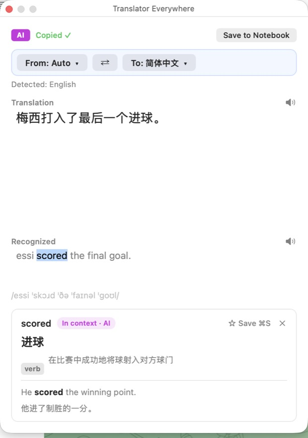
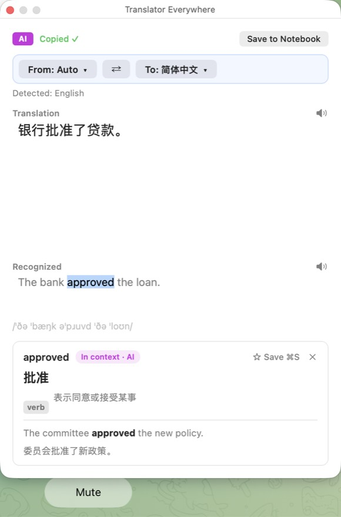
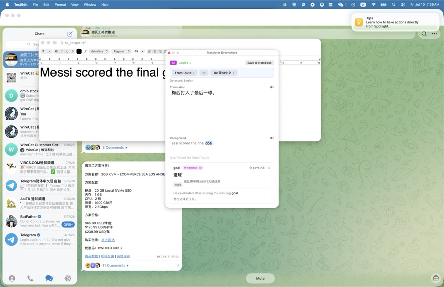
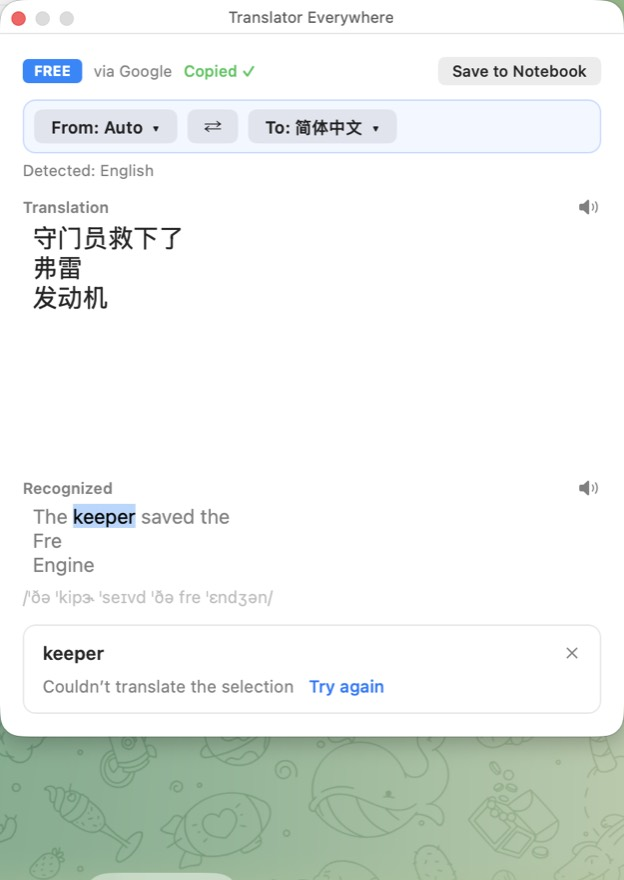
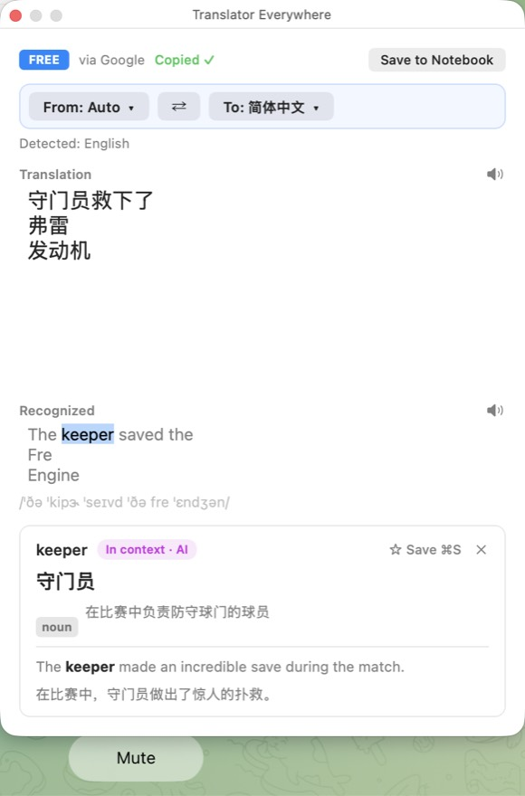
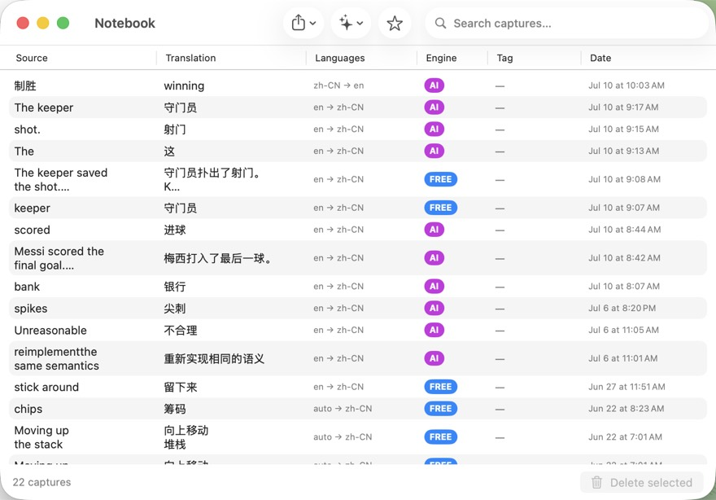
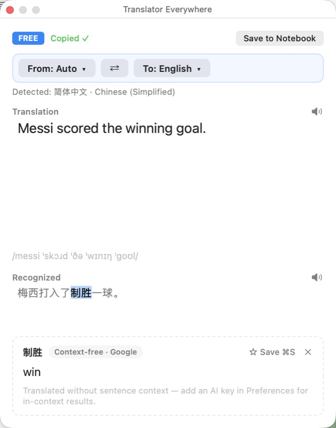

Contextual Selection Translate — Beta Report
★ At a glance
Lens A · round 1 (new-user)
"The happy path is genuinely lovely… context is clearly doing real work."
Lens B · round 1 (abuse)
3 high-severity robustness defects — all subsequently fixed & QA re-verified.
Coverage · round 1
PASS / FAIL / BLOCKED. Both FAILs fixed (commits below) and re-proven live.
Panel round 2
Aborted by network outage; PM cancelled the re-run. Hand-verify list in §05.
01 Feature coverage matrix
Round-1 verdicts, updated with post-fix status. Every row was exercised on the live app by an independent coverage tester; N10/N11 fixes were re-proven live by the fix Worker and a separate QA agent (different words, fresh builds), but did not get a fresh full-panel pass (waived).
| Row | Feature | Round 1 | Now | Evidence / note |
|---|---|---|---|---|
| N1 | Single word → dictionary card (contextual sense, POS, sense line, example) | PASS | PASS | "scored" → 进球, verb, in-context sense, example pair (shots/fix_card_live.jpg) |
| N2 | Short phrase (≤4 words) → phrase card | PASS | PASS | "the final goal" → 最后一个进球, noun-phrase chip |
| N3 | Long span → plain contextual block | PASS | PASS | whole sentence → translation only, no card fields (shots/betaC_N3.jpg) |
| N4 | zh→EN unspaced selection | PASS | PASS | 制胜 → "winning", adjective, zh/EN example |
| N5 | Google-only degraded card | PASS | PASS | dashed border + "Context-free · Google" chip (shots/betaC_N5.jpg) |
| N6 | Loading skeleton (+ Reduce Motion) | PASS | PASS | shimmer verified by pixel delta; Reduce-Motion sub-check TCC-blocked → §05 |
| N7 | Dismissal: Esc / click-outside / retranslate / new capture | PASS | PASS | all four verified (shots/betaC_N7_esc.jpg); Esc further hardened in 13c2991 |
| N8 | Rapid re-selection race → only latest renders | PASS | PASS | 打入→制胜 0.5s apart: only B rendered; cancelled-span re-fire fixed in ba621bd |
| N9 | ⌘S saves card to Notebook; header reclaims after | PASS | PASS | card → ★ Saved; Notebook row 制胜→winning (shots/betaC_N9.jpg) |
| N10 | Failure → quiet error row + Try again | FAIL | FIXED | was: eternal shimmer. c23fbe0+cb9045d: outcome taxonomy + watchdog. Live: shots/fix2_error_row.jpg → recovery shots/fix2_after_retry.jpg |
| N11 | Identical re-click = no-op (card stays, no re-bill) | FAIL | FIXED | was: dismissed the card. ba621bd: deferred collapse + slot-state dedupe. Live: shots/fix3_reclick_4s.jpg |
| N12 | Translation pane inert (out of scope surface) | PASS | PASS | selection there triggers nothing |
| R1 | ⌃⌥Y capture → OCR → whole-text translation | PASS | PASS | real hotkey → crosshair → panel, AI badge, IPA |
| R2 | Language bar retranslate + swap | PASS | PASS | ⇄ remaps pair and retranslates |
| R3 | Read-aloud both panes | BLOCKED | BLOCKED | TTS visibly engages (stop-square); audio itself unverifiable by robot → §05 |
| R4 | IPA phonetics under English panes | PASS | PASS | present throughout |
| R5 | Whole-capture save (no card) | PASS | PASS | header ★ Saved + notebook row |
| R6 | Preferences + engine switch | PASS | PASS | Free↔OpenAI takes effect next capture |
| R7 | Auto-detect display | PASS | PASS | shown with From: Auto, hidden when explicit |
| R8 | Menu-bar agent behavior | PASS | PASS | stable across ~13 captures |
02 What the beta pass caught and fixed
Ten fix/test commits landed after the automated suite was already green — every one of these was invisible to the original spy-based tests and only surfaced by driving the real app.
| Commit | Defect (as a user saw it) | Root cause |
|---|---|---|
| b5b953d | Selecting a word did nothing at all — ever | NSTextView's mouse-tracking loop consumes the mouse-up and suppresses mid-drag notifications; the settle chain had no live trigger |
| 8ed7e6e | (test hardening) | mutation testing showed 2 of 3 fix mechanisms unpinned; now each is killed by its own test |
| c23fbe0 | Failed lookups vanished silently — skeleton shimmered forever | stray cancellation-shaped errors mapped to "superseded" (renders nothing); plus a synchronous Keychain read could block below the 8s deadline → new outcome taxonomy + lookup watchdog |
| ba621bd | A failed word could never be looked up again until restart; re-clicking a carded word killed the card | span dedupe keyed on slot visibility (error row deduped against itself); re-double-click's transient caret collapse tore the card down; the fire gate read global OS mouse state, which sticks on this hardware → panel-tracked interaction gate + slot-state dedupe + deferred collapse |
| 13c2991 | Esc sometimes closed the whole panel (translation lost) or did nothing | Esc handling depended on which view had focus; now intercepted at the window level — slot-only dismissal whenever a slot is active |
| cb9045d | (review catch, pre-user) | a hung lookup rescued by the watchdog could later re-mount its stale result over the error row; generation now invalidated |
03 Evidence gallery








04 Pre-existing bugs proven on main (not this feature)
Both were reported as feature bugs by lens testers; the fix Worker reproduced both on a main-built binary with screenshots, so they ship today in v1.4.0 and are fast-follow candidates, not blockers:
- Notebook window never refreshes — rows saved while (or after) the window is open don't appear until app restart. Looks like data loss; isn't (the row is saved).
- The app can OCR its own panel — a new capture whose region overlaps the result panel recognizes the panel's own UI text. The select-then-recapture workflow this feature encourages makes it easier to hit.
05 What only your hands can verify (Gate 3 checklist)
- The one that matters: capture any sentence, double-click a word — repeat across 5–10 fresh captures. A card (or, on failure, the quiet error row) should appear every time. If any selection dies silently, tell the Orchestrator — that's a real bug and reopens the fix chain.
- Read-aloud: click both speaker buttons — do you hear speech? (Robot can't hear; R3.)
- Reduce Motion (System Settings → Accessibility): loading skeleton should be static, not shimmering. (TCC blocked the robot toggle; N6 sub-check.)
- Error-path feel: Preferences → break your OpenAI key on purpose → select a word → quiet "Try again" row (not a hang); fix the key → Try again → card.
- ⌘S nuance to know: while a card is open, ⌘S saves the card even if another app is frontmost (and that app also receives its own ⌘S). Known trade-off of the floating panel — flagged for fast-follow.
06 Fast-follow list (non-gating, prioritized)
- Notebook window live-refresh (pre-existing; highest user-visible payoff)
- Hide the panel during a new capture (pre-existing self-OCR; amplified by this feature)
- Discoverability hint — nothing tells users the Recognized pane is selectable (one-time ghost text suggested)
- Panel width doesn't re-fit after a wide capture; card controls end up far from content
- Card headline sometimes gives a generic gloss while its own sense line is in-context (prompt tweak; observed once with "tied" → 系)
- Example sentence is generated instead of echoing the captured sentence; span bolding inconsistent
- ⌘S double-action when another app is frontmost; trailing punctuation kept in headword; panel position memory
07 Verdict
The feature's content quality was praised by every tester that reached it — context disambiguation demonstrably works (football "scored", financial "bank", loan "approved", zh 制胜/打入). All five robustness defects the panel filed are fixed, pinned by regression tests (240 → 311), and re-proven on the running app with screenshot evidence. What this report cannot honestly claim is a clean full-panel pass on the final build: that run was first destroyed by a network outage, then cancelled by the PM in favor of hand verification. Recommend: ship after the §05 checklist passes under your hands.